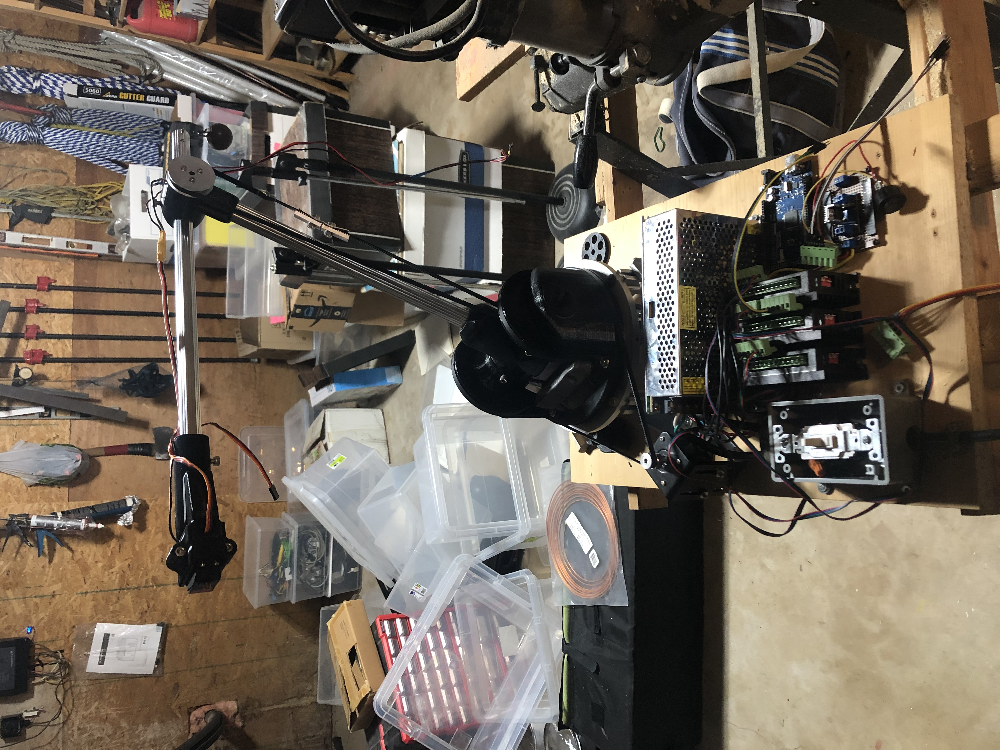

The Robotic Arms project is a testament to my ability to design, prototype, and refine advanced mechatronic systems. Over three iterations, the designs evolved from basic manual control to fully autonomous functionality with impressive performance metrics in the final arm.
First Robotic Arm
This is where I learned the basics of robotic arm mechanics and programming, using cost-effective components.
Second Robotic Arm
This iteration introduced stronger components and additional degrees of freedom for better versatility.

Final Robotic Arm
Achieving 6 degrees of freedom, advanced precision, and wireless control, this design is the culmination of all previous work.

Progression of the Robotic Arms
- Prototype 1: Basic control and design principles using low-cost servos.
- Prototype 2: Enhanced with better components and additional degrees of freedom.
- Final Design: Fully functional arm with autonomous capabilities and wireless control.